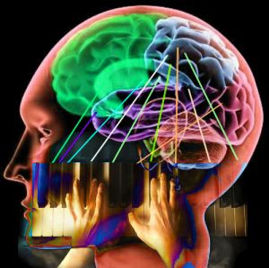
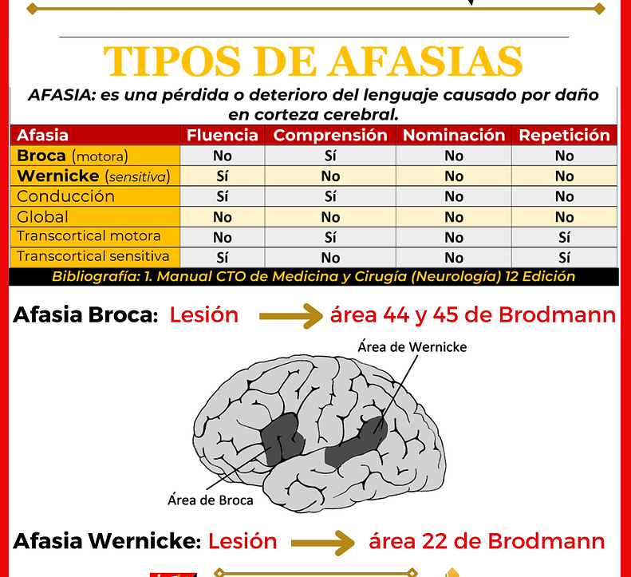
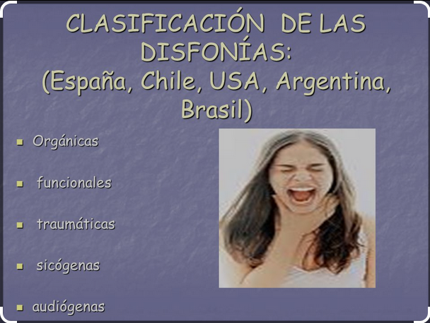

Tratamiento integral de trastornos del habla, voz y deglución atípica en la neurorrehabilitación
La Neurorrehabilitación: es un campo de las ciencias de la salud que se enfoca en la recuperación de pacientes que han sufrido daños cerebrales y/o del sistema nervioso.
Algunos de los trastornos del habla y la voz más comunes incluyen:
DISARTRIA
AFASIA
DISFONIA "alteraciones en la calidad, tono o volumen de la voz"
Disfonía orgánica Se produce por una alteración en las cuerdas vocales (nódulos, pólipos, distonía en la laringe…), en muchos casos derivada de una disfonía funcional que no ha sido tratada. Esta mala vibración de las cuerdas vocales causa períodos de ronquera, voz rasposa o entrecortada. Disfonía funcional Cuando el paciente no presenta una malformación en la laringe que le provoque problemas en la voz. Su dolencia se debe al mal uso vocal. Por ej., habla durante largos periodo de tiempo, no respira correctamente mientras habla, fuerza el volumen, carraspea constantemente a modo de tic
DISFAGIA o DEGLUCION
Aunque se suele pensar que el tragar (deglución) es un proceso simple, en realidad es un proceso complicado. Para que la deglución se produzca con normalidad, el cerebro debe coordinar de forma inconsciente la actividad de numerosos músculos de la garganta y el esófago. Estos músculos deben contraerse fuertemente y en la secuencia apropiada para empujar el alimento desde la boca hacia la parte posterior de la garganta (faringe) y luego hacia el esófago. La parte superior del esófago debe relajarse para permitir que los alimentos entren en el esófago. Por último, la parte inferior del esófago debe relajarse para permitir que los alimentos entren en el estómago.
La disfagia es una alteración de cualquiera de las 4 fases del proceso deglutorio. En otras palabras, es la incapacidad para poder formar el bolo alimentario y/o transportarlo de la boca al estómago. Para poder entender exactamente qué es la disfagia, debemos saber en qué consisten las diferentes fases deglutorias: 1-Fase pre-oral u oral preparatoria: es una fase involuntaria, engloba todo el proceso anterior a introducir el alimento en la boca (salivación, anticipación del sabor…). 2-Fase oral: fase voluntaria compuesta por masticación, formación y propulsión del bolo alimentario. 3-Fase faríngea: fase involuntaria, el bolo pasa de la faringe al esófago. 4-Fase esofágica: fase involuntaria, el bolo pasa del esófago al estómago.